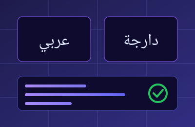
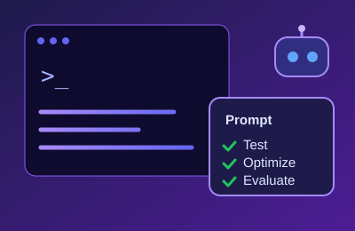
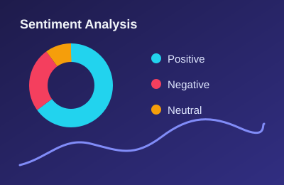

About Me
I am passionate about Artificial Intelligence, Prompt Engineering, and Natural Language Processing. My areas of focus include Arabic and Moroccan Darija text analysis, AI data annotation, multilingual evaluation, structured prompt design, and AI response assessment.
I enjoy exploring how AI models understand language, follow instructions, and generate responses. I am continuously developing my technical and analytical skills while exploring practical AI applications.
★Skills
AI & Data
- Data Annotation & Classification
- Prompt Engineering
- LLM & AI Model Evaluation
- Arabic & Moroccan Darija NLP
Web & Technical
- HTML5 & CSS3
- JavaScript (Basics)
- Git & GitHub
- Excel & Google Sheets
💼 Featured Projects

Arabic & Darija Data Evaluation
Evaluated and refined Machine Learning datasets for Arabic and Moroccan Arabic NLP models, ensuring high linguistic accuracy and alignment.

Structured Prompt Design
Designed and optimized multi-turn prompt workflows to enhance response precision, contextual consistency, and reduce model hallucinations.

Moroccan Dialect Sentiment Analysis
Annotated, categorized, and structured colloquial conversational datasets to support regional dialect sentiment tracking systems.
Contact Me
Let's connect and build intelligent solutions together.